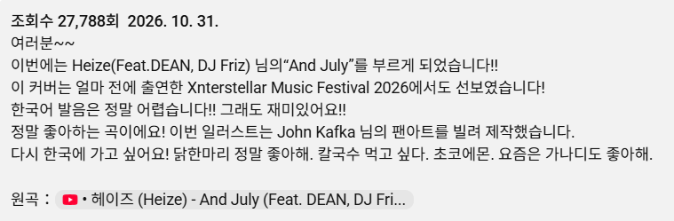

이왜진
거기다 일본어도 아니고 한국어로 부름

이왜진
거기다 일본어도 아니고 한국어로 부름
겐
뼤끼쀠끼삒삐끾 왜안함
와 너무좋다 한국많이와라 초코에몽 많이사줄게
트위터도 번역없이 한국어로 할때부터 알아봄
아도가 부른 스텔라장의 빌런 들어봐 진짜 좋음
헤헤 인싸님들 제이팝 많이많이 들어주세요. 그래야 내한 와요
여태 노래가 별로였구나
일본의 유우명한 한국좋아청년
한국씹덕들은 일본가수좋아하고 일본가수들은 한국좋아하고..좋긴한데 씹덕이라 한국노래는 옛날거밖에모른다고..
이따가 볼것